滋賀県を
飛び込み競技の
聖地に
Morking Shiga Prefecture a sacred place for diving competitions
飛び込み競技の
聖地に
Morking Shiga Prefecture a sacred place for diving competitions
飛び込み競技の
トップアスリートの輩出を目指して
トップアスリートの輩出を目指して
一般社団法人びわこウェルピーイングコミュニティは、飛び込み競技のトップアスリートの 育成と地域活性化を目指し、「滋賀・立命館ダイビングクラブ」を新設しました。
-
滋賀から
オリンピック選手
(メダルを獲得できる選手)
を輩出する -
滋賀で
世界トップの
チームを創る -
 多様な事業により地域を
多様な事業により地域を
活性化し、飛び込み競技の
知名度を高める

- 
- MANAGEMENT CORPORATION
- 運営法人: 一般社団法人びわこウェルピーイングコミュ二ティ
- 設立: 2024年4月1日
- 代表者: 伊坂忠夫
OPENING EVENT
7/27にインフロニア 草津アクアティクスセンターの
オープンに伴い、「ダイビング（飛込）体験教室（無料）」を開催します。
日時2024.07.27（土）13：00～14：00（12時より受付開始）
場所インフロニア草津アクアティクスセンター
飛込競技は日本では施設が少ないため競技人口も少ないですが、海外では大変人気があるスポーツです。 体験教室では飛込競技の説明、踏切動作の練習をしたあと、実際に低い飛込台から飛んでみます。 完成したばかりの10ｍ飛込台にも実際に上って高さを体験してみますよ！ （10ｍ台からは飛び込みません）（対象：小学1年生以上～。足をつかずに15ｍ以上泳げること。）
NEWS
7/27にインフロニア 草津アクアティクスセンターの
オープンに伴い、「ダイビング（飛込）体験教室（無料）」を開催します。
6/28 ~ 30日、京都アクアリーナで開催された、2024年度関西選手権水泳（飛込）競技大会にて、滋賀・立命館ダイビングクラブの伊藤洸輝選手が、シニア男子3m飛込で優勝、シニア男子高飛込で6位の好成績を収めました。
今後、飛込教室を定期開催する予定です。準備が整い次第、
当HPなどでお知らせします。